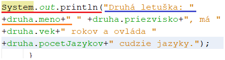

Java
Charakteristika
- objektovo orientovaný programovací jazyk
- nezávislosť na platforme. Program je napisaný v jazyku Java beží bez nutnosti prevádzať akékoľvek úpravy zdrojového kódu prakticky na všetkých operačných systémoch
- využitie v prostredí Internetu. Java umožňuje jednoduché používanie v prostredí sete internet, niekdy bývá nazývana "jazykom internetu".
- integracia grafického a sieťového rozhrania, možnosť práce s multimédiami.
- zdarma
- jednoduchá syntax
- vysoký výkon.
- jednoduchá práca s objektami prostredníctvom tzv. garbage collectora
- bezpečnosť. Odstranenie rady potenciálnych nebezpečných konštrukcií, ktoré bývajú zdrojom častých a ťažko odhaliteľných chýb.
Dátové typy
- celé číslo - int
- des. čísla – float (b= 7.36)
- reálne – double
- dlhé celé čislo – long (m=150 000l)
- krátke celé číslo – byte (b=100)
- log. hodnoty – boolean (hodnota - true/false)
- znak – char (char c='A')
- textový reťazec – String (String s='Ahoj')
Deklarácia
int a = 15;Operátory a operácie
- súčet '+'
- rozdiel '-'
- súčin '*'
- podiel '/'
- zvyšok '%'
Podmienka 'if‘
Cyklus 'for'
Cyklus 'while'‘
Cyklus 'do-while'
Switch-case
Premenné
- public – k premennej sa bude dať pristupovať z ľubovoľnej tried
- protected – k premennej sa bude dať pristupovať z tried rovnakého balíka (package) a z tried, kt. vznikli odvodením triedy
- private – k premennej sa bude dať pristupovať len z metód tejto triedy
- typy metód:
- ◦ak metóda nič nevracia – void() public void vypis(){System.out.println(„Volám sa ... „ +meno)};
- ◦ak vracia hodnotu – príkaz 'return'
Reťazce
Metóda na výpis
Reťazec znakov (píše sa do zátvoriek a medzi úvodzovky
Metóda na výpis hodnoty premennej (píše sa mimo úvodzoviek a s ostatnými reťazcami sa spája pomocou ‚+‘ , kt. sa píše pred aj za)
- charAt(x) – znak na danej pozícii (začina na ‚0‘)
- indexOf(znak) – zistí pozíciu znaku v reťazci
- lenght() – počet znakov obsiahnutých v reťazci
- toLowerCase – veľké písmen -> malé
- toUpperCase – malé -> veľké
- replace(čo,čím) – nahradí znak iným znakom
- substring(od_znaku) – vytvorí podreťazec od danej pozície až po koniec
- substring(od_znaku_po_znak) – vytvorí podreťazec od danej pozície pod inú danú pozíciu
- Substring.valueOff(datovy_typ) – spraví z dát. typu reťazec
- retazec1.concat(retazec2) – spájanie reťazcov